<!DOCTYPE html>
<html>

<head>
    <meta name="viewport" content="width=device-width,initial-scale=1.0">
    <link rel="icon" href="Graphics/favicon.png" type="image/png" sizes="16x16">
    <link rel="stylesheet" href="style.css" type="text/css">
    <script src="index_script.js"></script>

    <link href="https://fonts.googleapis.com/css?family=Playfair+Display:400,400i" rel="stylesheet">

</head>

<body>
    <button id="colorBar" onclick="toggleAbout()">
        <hr class="aboutLine">
        <div id="aboutWrapper">
            <p class="aboutName">AARON GREIDER</p>
            <p class="aboutTitle">EDUCATION</p>
            <ul>
                <li>University of Cincinnati</li>
                <li>Visual Communication</li>
                <li>Sophomore</li>
            </ul>
            <p class="aboutTitle">LEADERSHIP</p>
            <ul>
                <li>2018 AIGA Student Group Co-President</li>
                <li>2017 Eagle Scout Award</li>
            </ul>
            <div class="skills">
                <ul>
                    <li>Illustrator</li>
                    <li>InDesign</li>
                    <li>Premiere Pro</li>
                    <li>Photoshop</li>
                </ul>
                <ul>
                    <li>Autodesk Maya</li>
                    <li>Wordpress</li>
                    <li>HTML & CSS</li>
                    <li>Javascript</li>
                </ul>
            </div>
            <div class="mediaWrapper">
                <hr class="mediaLine">
                <a href="https://www.behance.net/aaron_greider" target="_blank" class="mediaLink">BEHANCE</a>
                <hr class="mediaLine">
                <a href="https://www.instagram.com/aa.j.g/?hl=en" target="_blank" class="mediaLink">INSTAGRAM</a>
                <hr class="mediaLine">
                <a href="https://www.linkedin.com/in/aaron-greider" target="_blank" class="mediaLink">LINKEDIN</a>
                <hr class="mediaLine">
            </div>
        </div>

    </button>


    <div id="hamburger" class="framingText" onclick="toggleAbout()">
        <hr class="left">ABOUT
        <hr class="right">
    </div>

    <div class="nameBar framingText">
        <hr class="left">AARON GREIDER
        <hr class="right">
    </div>


    <div id="viewport">
        <div id="scrollClip">
            <div class="galleryContent" id="gallery">
                <div class="gallerySlider" id="gallerySlider1">
                    <div id="scrollContent">
                        <div class="column colTitle">
                            <p class="title">The Jabberwocky</p>
                            <hr class="line">
                            <p class="description">I created six illustrations bound together in a booklet based on the
                                classic nonsense poem by Lewis Carroll.</p>
                        </div>
                        <div class="column colProcess">

                            <p class="subTitle">Nonsense</p>
                            <p class="processDescription">
                                ’Twas brillig, and the slithy toves
                                <br>Did gyre and gimble in the wabe:
                                <br>All mimsy were the borogoves,
                                <br>And the mome raths outgrabe.
                                <br><br>“Beware the Jabberwock, my son!
                                <br>The jaws that bite, the claws that catch!
                                <br>Beware the Jubjub bird, and shun
                                <br>The frumious Bandersnatch!”
                                <br><br>He took his vorpal sword in hand;
                                <br>Long time the manxome foe he sought—
                                <br>So rested he by the Tumtum tree
                                <br>And stood awhile in thought.
                                <br><br>And, as in uffish thought he stood,
                                <br>The Jabberwock, with eyes of flame,
                                <br>Came whiffling through the tulgey wood,
                                <br>And burbled as it came!
                                <br><br>One, two! One, two! And through and through
                                <br>The vorpal blade went snicker-snack!
                                <br>He left it dead, and with its head
                                <br>He went galumphing back.
                                <br><br>“And hast thou slain the Jabberwock?
                                <br>Come to my arms, my beamish boy!
                                <br>O frabjous day! Callooh! Callay!”
                                <br>He chortled in his joy.
                                <br><br>’Twas brillig, and the slithy toves
                                <br>Did gyre and gimble in the wabe:
                                <br>All mimsy were the borogoves,
                                <br>And the mome raths outgrabe.
                            </p>
                            <p class="processDescription"><br><br><br>Even before I began my analysis of the poem,
                                I knew that I
                                wanted to take a the poem on a walk down the opposite direction of Disney’s or Tim
                                Burton’s take on the Alice in Wonderland
                                canon. I wanted to make it decisively darker by drawing parallels between the actions
                                of the hero and the sins of man.
                                I adapted stylistic elements from the late horror artist Bernie Wrightson to create a
                                more dubious and brooding
                                atmosphere.
                                <br><br>The poem is comprised of seven stanzas (I illustrated the latter six), which I
                                drew parallel to each of the seven deadly sins in my planning process - in the order of
                                Greed, Lust, Sloth, Envy, Wrath, Pride, and Gluttony respective
                                to each stanza. These attributes shaped how I presented each illustration emotionally.
                            </p>
                            <p class="subTitle">Analysis</p>
                            <p class="photoDescription">The first Illustration deals with the hero’s greed manifest
                                upon being sent to conquer
                                and destroy. </p>
                            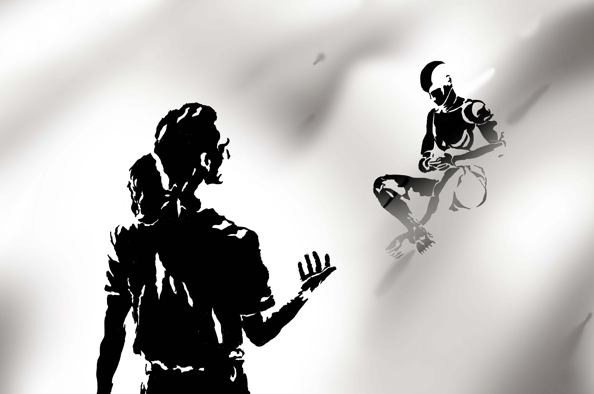
                            <div style="height: 4em;"></div>
                            <hr class="line">

                            <p class="photoDescription">The second
                                represents his sloth at the base of the Tumtum tree. The scene presents his action of
                                sloth and juxtaposes it with his
                                persistence to act on greed. I placed emphasis on his hand to show it as his “vorpal
                                sword,” the lack of a weapon is a
                                metaphor for brutality of his own doing.</p>
                            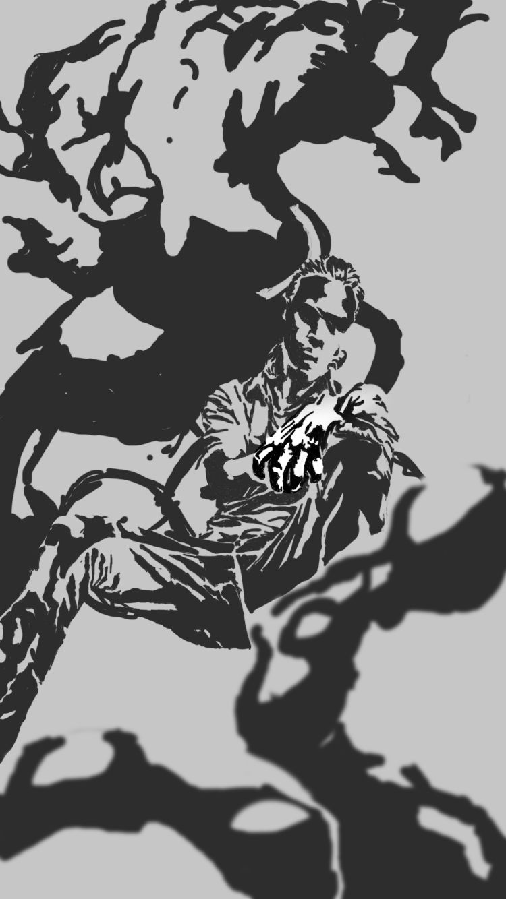

                            <div style="height: 4em;"></div>
                            <hr class="line">

                            <p class="photoDescription">Acting on it’s envy, the Jabberwocky releases itself upon the
                                hero where it is struck down in the name of the hero’s
                                wrath.</p>
                            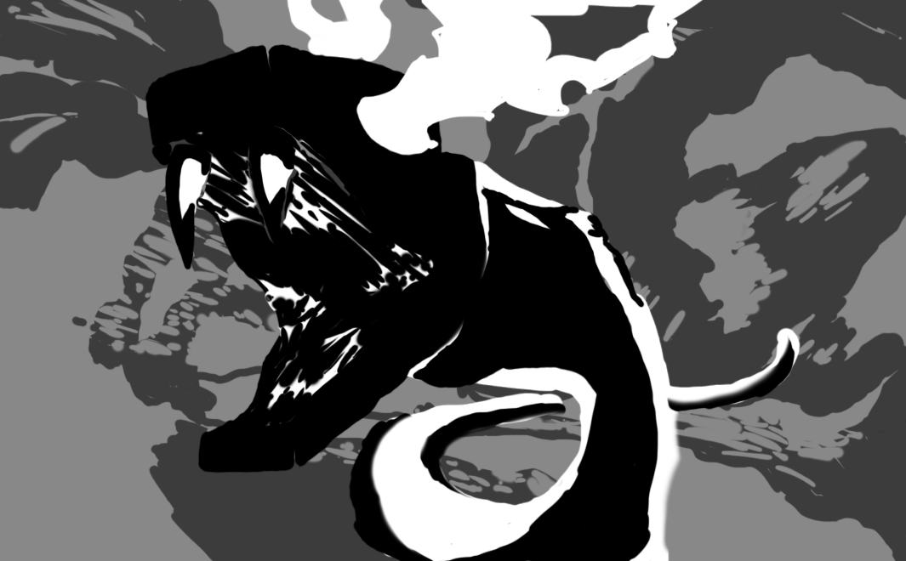

                            <div style="height: 4em;"></div>
                            <hr class="line">

                            <p class="photoDescription">The fourth illustration is from the Jabberwocky’s perspective
                                to emphasize it as the victim of wrath as well as
                                its own envy, and to evoke a sense of danger as the eyeless hero stares straight at
                                the viewer.</p>
                            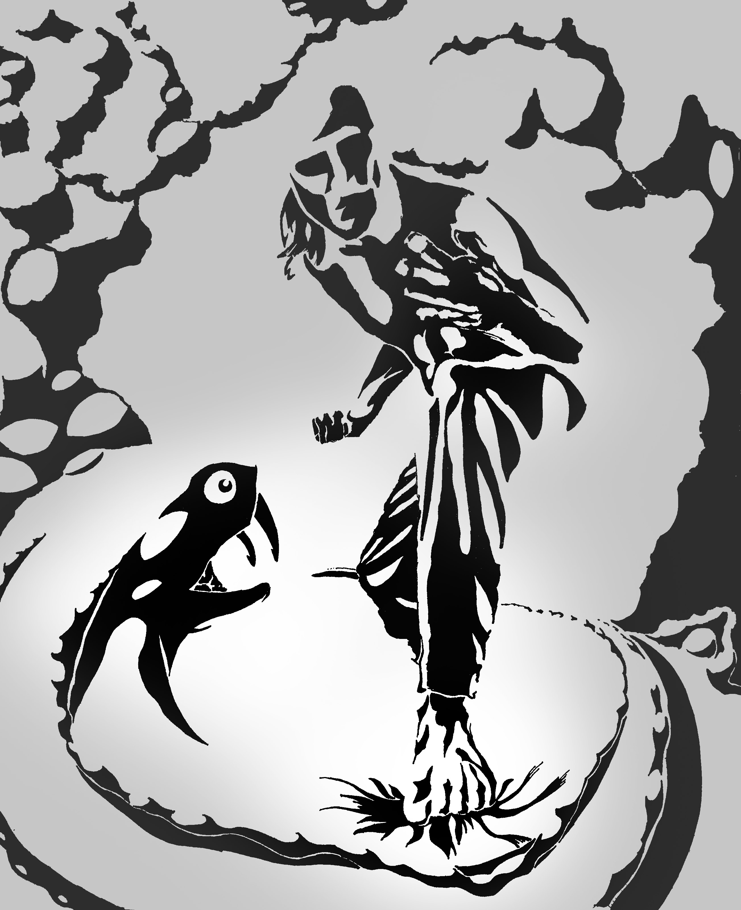

                            <div style="height: 4em;"></div>
                            <hr class="line">

                            <p class="photoDescription">Prideful as his conquest is completed, he arrives home to
                                celebrate his success and fame. </p>
                            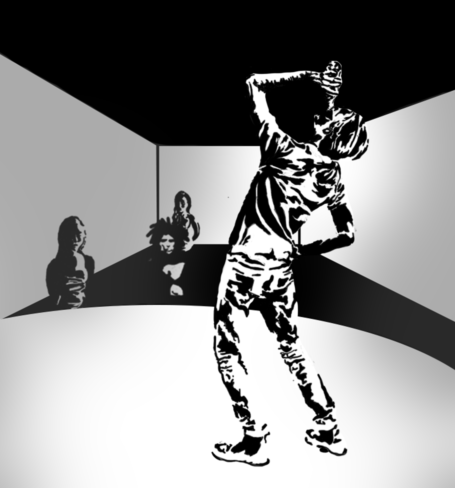
                            
                            <div style="height: 4em;"></div>
                            <hr class="line">

                            <p class="photoDescription"> In a deadly irony, his
                                pride leads him to a dangerous intoxication.</p>
                            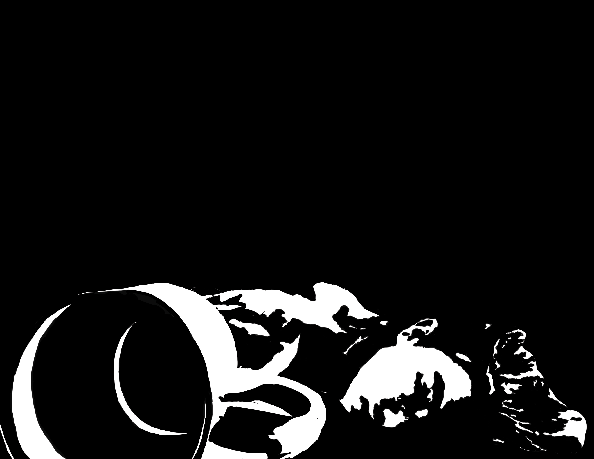

                            <div style="height: 4em;"></div>
                            <hr class="line">

                            <p class="photoDescription">
                                I created a translation of the first and last stanza to clearly portray my
                                interpretation:
                                <br><br>
                                It’s sunny, and the tree branches
                                <br>Did sway in the wind:
                                <br>All happy are our friends
                                <br>And the wildlife reaches out
                                <br><br>
                                As the first stanza, it sets a scene of a forest with plentiful wildlife and coexisting
                                establishment. As the last stanza, it
                                shows nature running its course on
                                the hero who, too intoxicated to defend himself, is graben by the force he grabed.
                            </p>

                            <p class="photoDescription">The booklet I created was intended to be a maze to flip
                                through, making the viewing
                                experience of the poem as confusing
                                as the language used.</p>
                        </div>

                        <p class="nextProject" onclick="incrementProject()">Next Project: </p>
                    </div>
                </div>

                <div class="gallerySlider" id="gallerySlider2">
                    <div id="scrollContent">
                        <div class="column colTitle">
                            <p class="title">Photography</p>
                            <hr class="line">
                            <p class="description">Photography is a passion of mine which bleeds greatly over into
                                3D Modeling. I find these two arts of composition fascinating
                                because of their capacity to control a viewer’s bias because of it’s narrow portrayal
                                of one subject.</p>
                        </div>
                        <div class="column colProcess">
                            <p class="subTitle">Attention to Detail</p>
                    
                            <p class="photoDescription"> Is the name of the game. Portraiture has the capability to
                                present a person or animal
                                in any emotional stance, where every variable from lighting, to angle, focal length
                                and proximity can independently and subtly influence how they are percieved.
                                <br>
                                <br>Abstract photography
                                deals with a similar idea; in some instances, focusing an abnormal amount on a part
                                of the subject may render the subject
                                unrecognizable. In either case, details must be dealt with respect.
                                <br>
                                <br>While Adobe Photoshop has the potential to change a photograph in amazing ways,
                                there is a point on that
                                spectrum where an image loses its integrity. These images have been minimally
                                post-processed.
                            </p>
                    
                            <div class="dropdownHeader" onclick="dropdownSlideshow(0)">
                                <h2>Portraits</h2>
                                <svg class="plusLines" height="20" width="20">
                                    <line x1="10" y1="0" x2="10" y2="20" />
                                    <line x1="0" y1="10" x2="20" y2="10" />
                                </svg>
                            </div>
                            <hr class="photoLine">
                            <div class="dropdownContent">
                                <div class="slideshow" id="slideshow1">
                    
                                    
                                    
                                    
                                    
                                    
                    
                                </div>
                                <button class="slideshowButton shiftLeft" onclick="incrementSlide(0, 0)">
                                    
                                </button>
                                <button class="slideshowButton shiftRight" onclick="incrementSlide(0, 1)">
                                    
                                </button>
                            </div>
                    
                            <div class="dropdownHeader" onclick="dropdownSlideshow(1)">
                                <h2>Abstract</h2>
                                <svg class="plusLines" height="20" width="20">
                                    <line x1="10" y1="0" x2="10" y2="20" />
                                    <line x1="0" y1="10" x2="20" y2="10" />
                                </svg>
                            </div>
                            <hr class="photoLine">
                            <div class="dropdownContent">
                                <div class="slideshow" id="slideshow1">
                    
                                    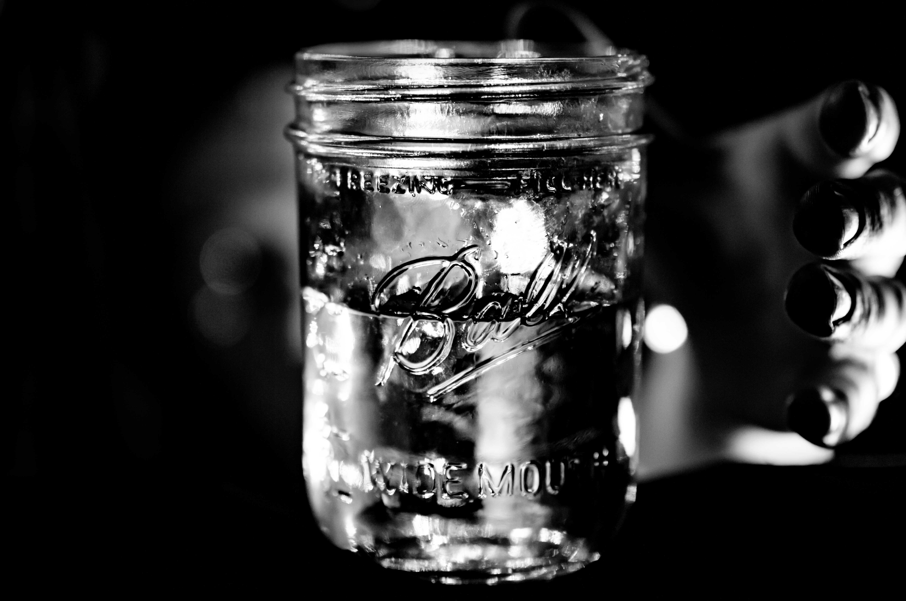
                                    
                                    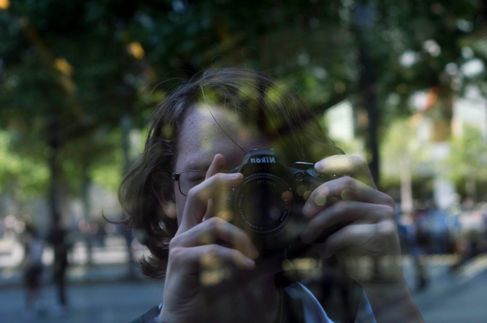
                                    
                                    
                    
                    
                                </div>
                                <button class="slideshowButton shiftLeft" onclick="incrementSlide(1, 0)">
                                    
                                </button>
                                <button class="slideshowButton shiftRight" onclick="incrementSlide(1, 1)">
                                    
                                </button>
                            </div>
                        </div>
                    
                        <p class="nextProject" onclick="incrementProject()">Next Project: </p>
                    </div>
                </div>

                <div class="gallerySlider" id="gallerySlider3">
                    <div id="scrollContent">
                        <div class="column colTitle">
                            <p class="title">Patch</p>
                            <hr class="line">
                            <p class="description">Patch is a work in progress midi control program. Through a
                                custom-purposed
                                Raspberry Pi and Teensy, we can simultaneously modify the patch - and other midi
                                variables
                                - of a Nord Keyboard and Virus TI synthesizer through the convenience and familiarity
                                of
                                a mobile web browser. Patch was in need of design assistance for the UI interface and
                                identity
                                of the software.</p>
                        </div>
                        <div class="column colProcess">
                            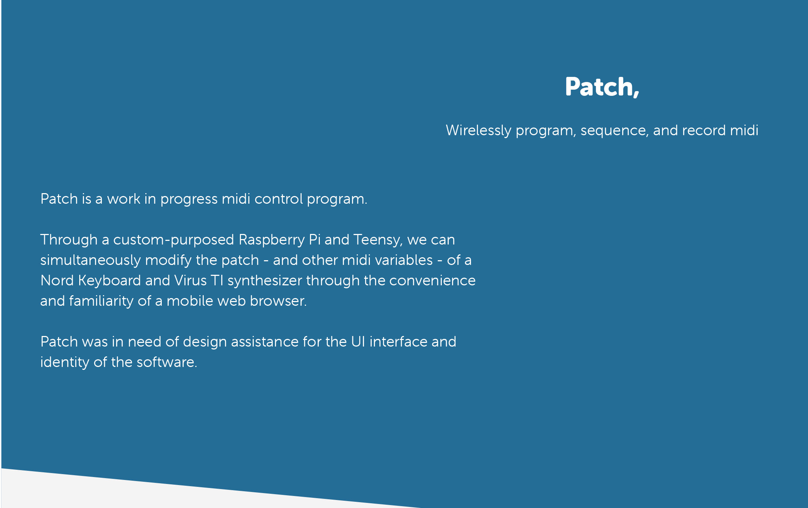
                            
                            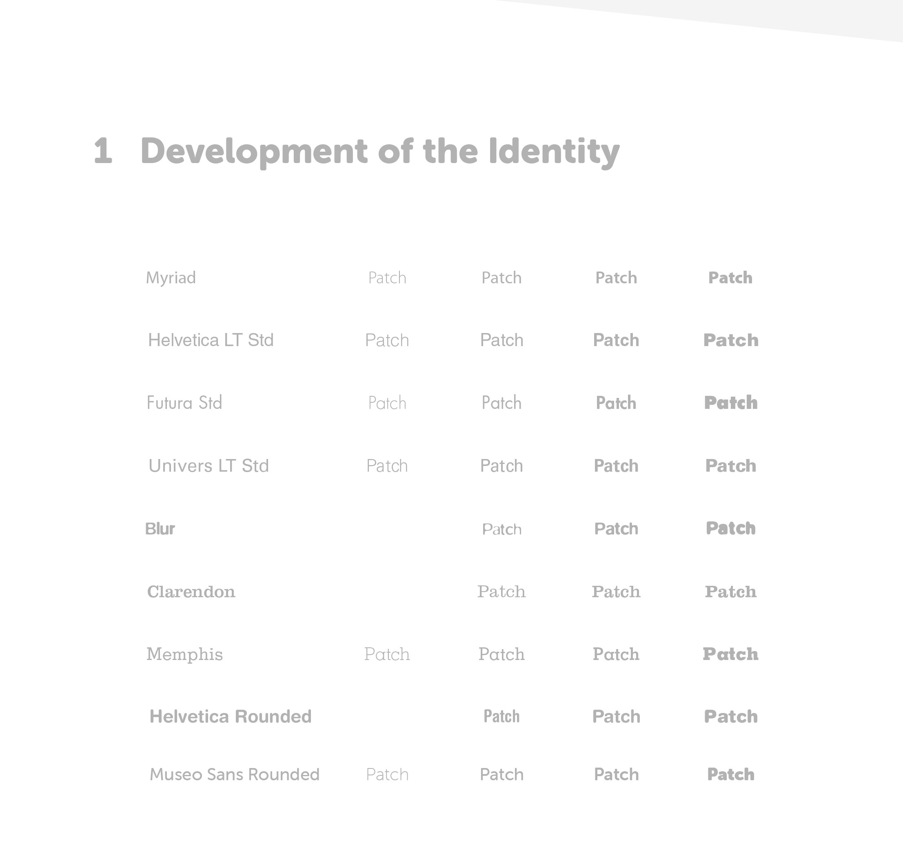
                            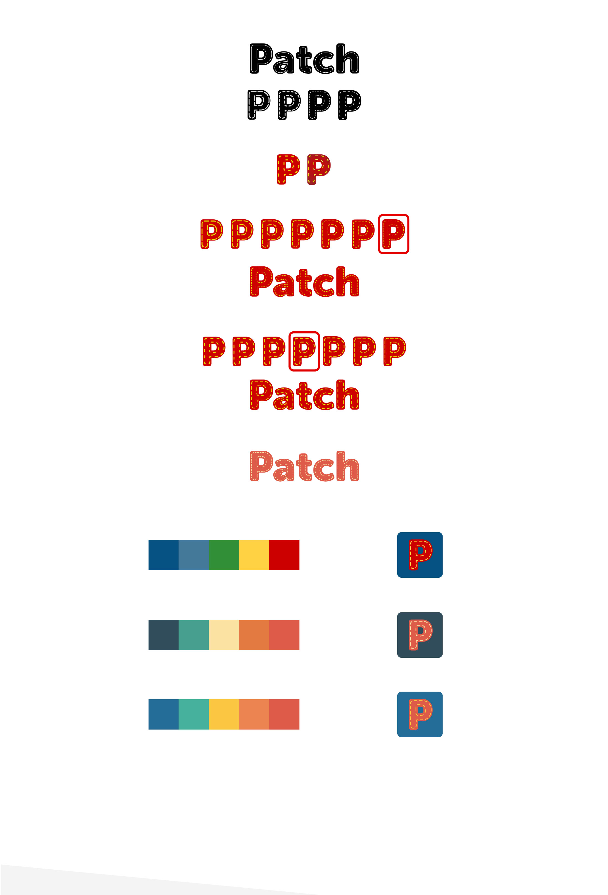
                            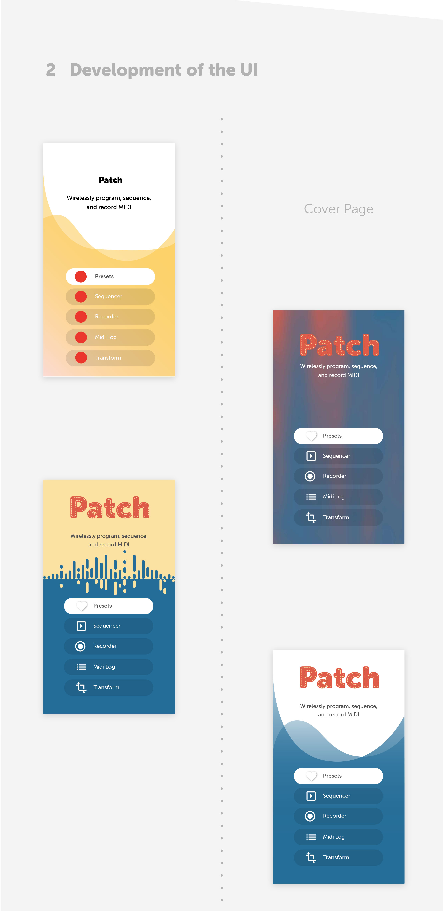
                            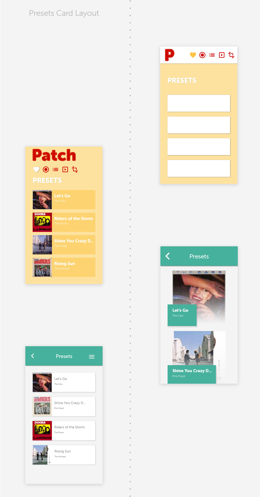
                            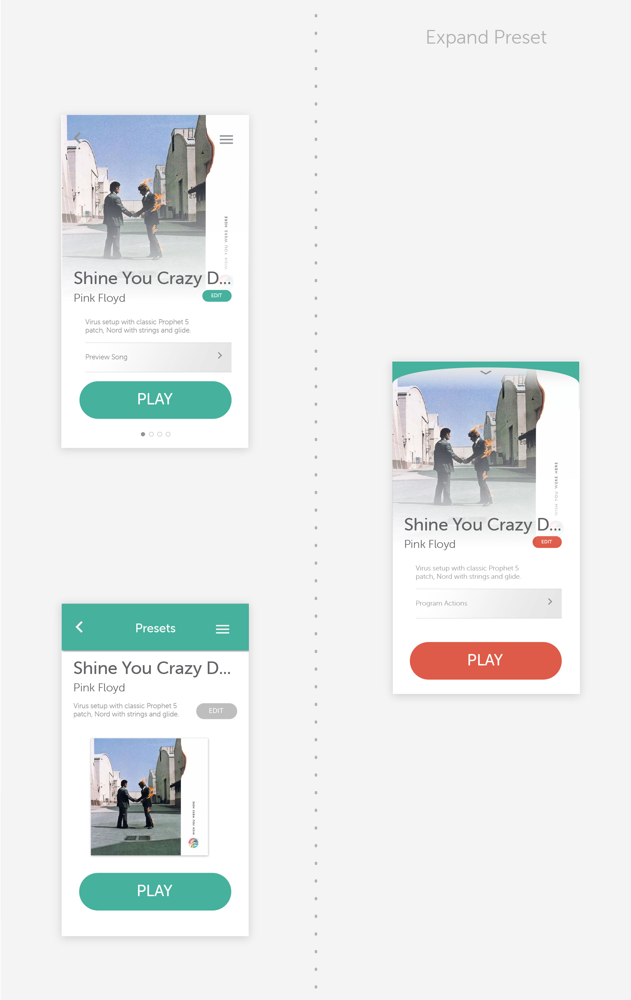
                            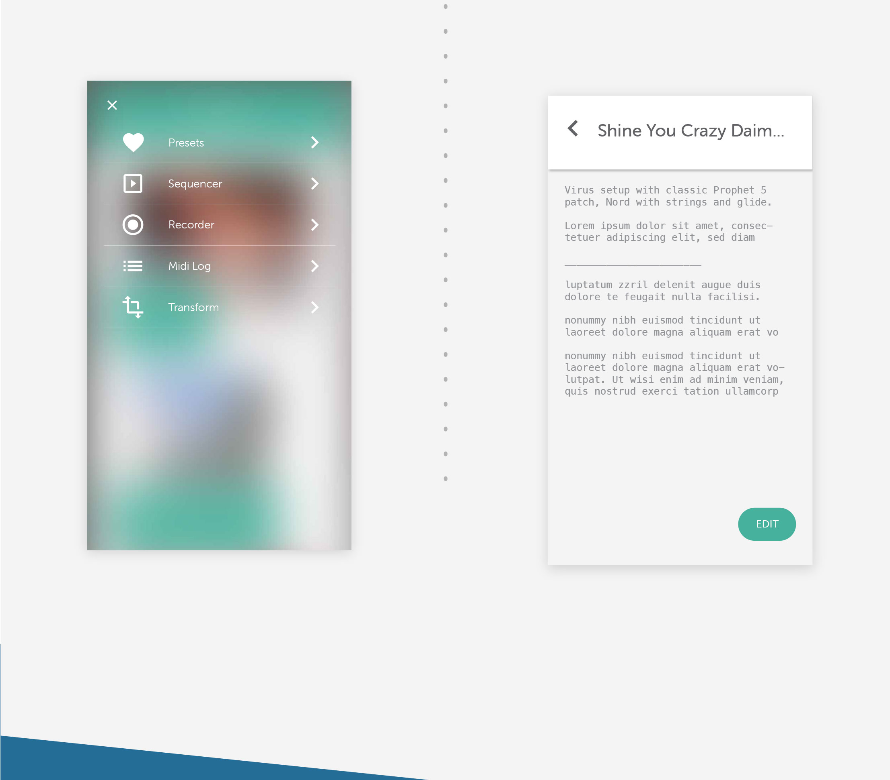
                            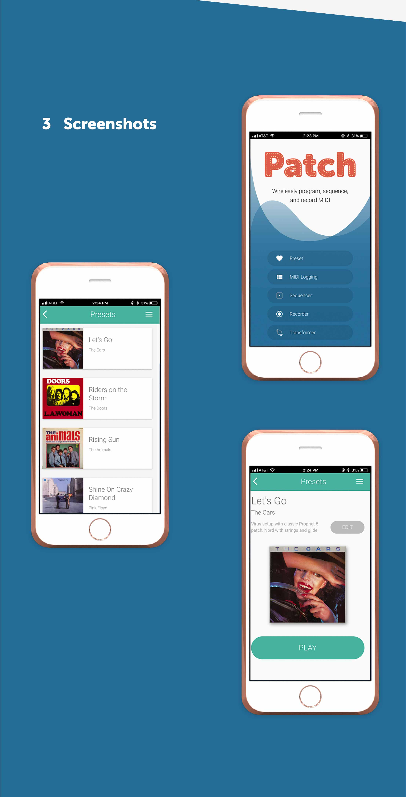
                        </div>
                    
                        <p class="nextProject" onclick="incrementProject()">Next Project: </p>
                    </div>
                </div>

                <div class="gallerySlider" id="gallerySlider4">
                    <div id="scrollContent">
                        <div class="column colTitle">
                            <p class="title">In the Style of Neville Brody</p>
                            <hr class="line">
                            <p class="description">One of our final class projects involved an imaginary scenario: each
                                of the students has been hired by PBS to design a poster for an episode in an upcoming
                                series about the history of design. Each episode will cover a different designer who
                                led the
                                design of their time.
                            </p>
                        </div>
                    
                        <div class="column colProcess">
                            <p class="subTitle">Research</p>
                            <p class="processDescription">Naturally, we drew designers out of a hat. I drew a
                                particular
                                rebel named Neville Brody.
                                <br>
                                <br> Known for his early work for Fetish Records and his design for The Face Magazine
                                in the 80’s and - later in the age of the internet - his leadership in digital font
                                creation through FUSE and FontShop.
                                <br>
                                <br>In his early days, Brody was a punk. He disdained his professors’ instruction, as
                                they
                                deemed his work “uncommercial.”
                            </p>
                            <p class="subTitle">Inspiration</p>
                    
                            <p class="processDescription">Selected works I chose to focus on, each are Brody's own.</p>
                    
                    
                            <div class="twoCol">
                                
                                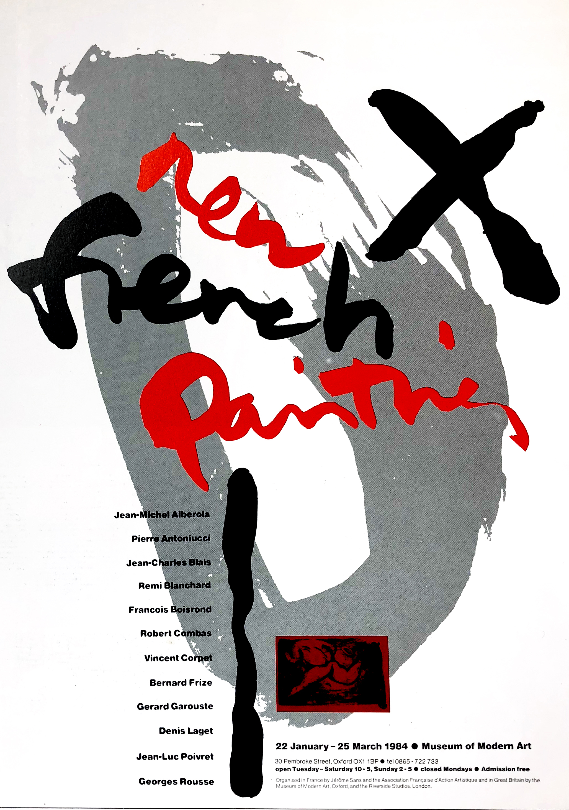
                            </div>
                            <p class="subTitle">Digital Ideation</p>
                    
                            <div class="twoRow">
                                
                                <p class="processDescription">Markmaking is a lifelong interest of
                                    Neville Brody. For my first of several iterations, I chose to explore the somewhat
                                    primal effect he found so
                                    intriguing.</p>
                            </div>
                    
                            <div class="twoRow">
                                
                                <p class="processDescription" id="figure12Text">A face is often seen in his work,
                                    especially early in his career, the faces were obscured in some way. I took an
                                    image of Brody
                                    as a young-un and in photoshop I desaturated it and applied a threshold filter to
                                    achieve the two-tone black and white.</p>
                            </div>
                            <div class="twoCol">
                                
                                <p class="processDescription">Once again experimenting with primality
                                    of human nature, I chose to include paint splatters to imply that the poster has
                                    been
                                    slung at carelessly. I obscured Brody's face by converting it to halftones and
                                    integrating it with the background - almost as if it were burnt - with a
                                    graphite-textured
                                    photoshop brush.
                                    <br>
                                    <br>This inital experiment was the precursor for the concepts I used in the final.
                                </p>
                            </div>
                    
                            <p class="subTitle">Final Poster</p>
                            <p class="processDescription"></p>
                    
                            
                            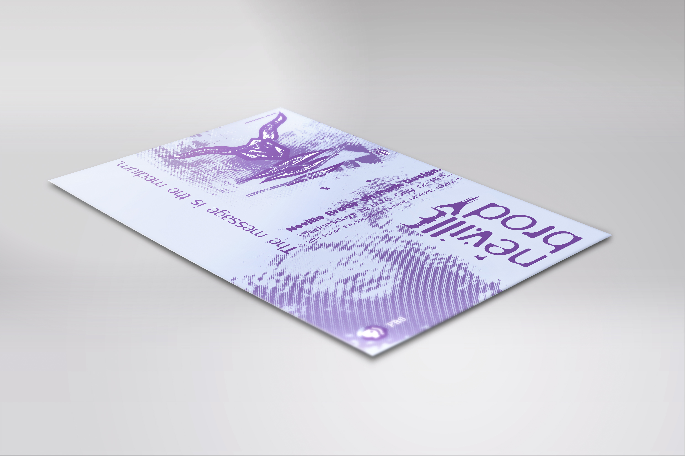
                    
                        </div>
                    
                        <p class="nextProject" onclick="incrementProject()">Next Project: </p>
                    </div>
                </div>

                <div class="gallerySlider" id="gallerySlider5">
                    <div id="scrollContent">
                        <div class="column colTitle">
                            <p class="title">Poster Studies</p>
                            <hr class="line">
                            <p class="description">Given a set body of text and a rigid corresponding hierarchy, I
                                created
                                four 11 x 17 graphic arrangements while adhering to the University of Cincinnati
                                branding
                                guidelines. Through this process, I gained the ability to justify my design decisions
                                through
                                rational and topical relevance while conveying the identity of an organization.</p>
                        </div>
                        <p class="subTitle">Inspiration</p>
                        <div class="twoRow">
                            
                            
                        </div>
                        <p class="subTitle">Sketches</p>
                    
                        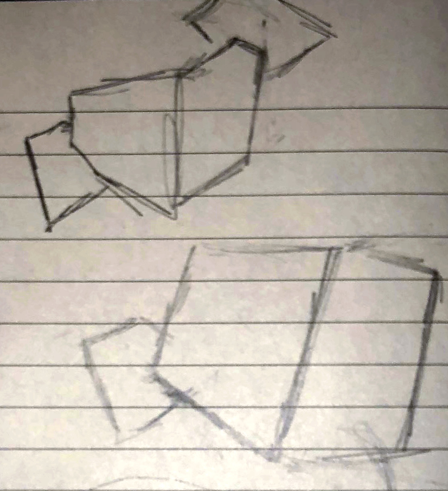
                        <div class="twoRow">
                            
                            
                        </div>
                        <p class="subTitle">Digital Ideation</p>
                        <div class="threeCol">
                            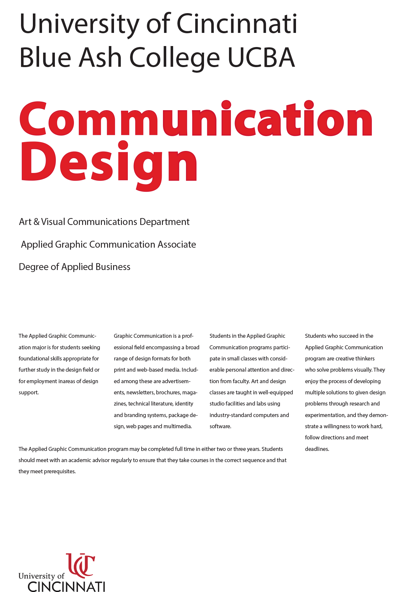
                            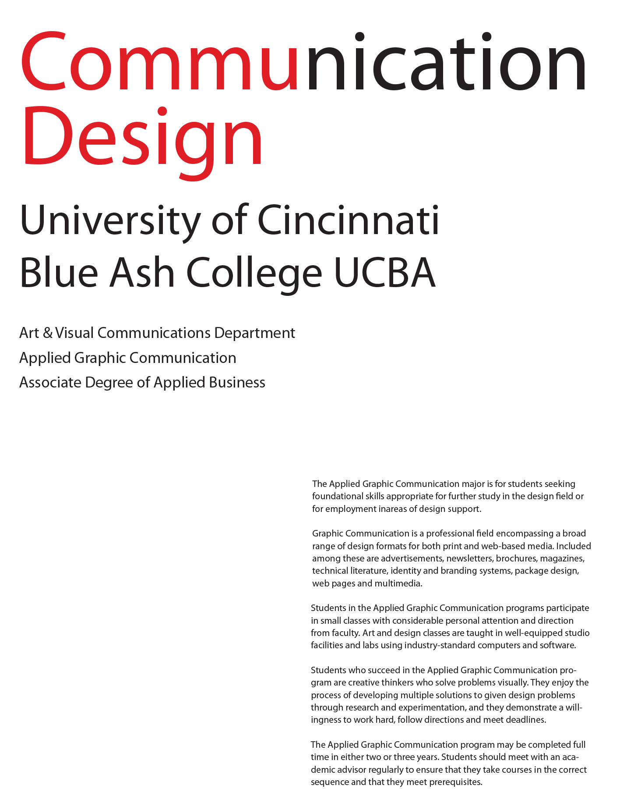
                            <p class="processDescription" id="posterText2">
                                For the first many iterations, we designed
                                exclusively by a grid, and avoided particular graphic elements. Eventually, we were
                                encouraged to spread out, to put personality and a wider variety of brand elements into
                                our composition.
                            </p>
                        </div>
                        <div class="twoCol">
                            <div class="twoCol">
                                
                                
                            </div>
                            <div class="twoCol">
                                
                            </div>
                        </div>
                        <p class="processDescription" id="posterText3">I pursued the idea of implied space and
                            depth
                            for my first graphic poster. For the appearance of a clean and finalized result, I used
                            Autodesk
                            Maya to emulate studio-lit photography with renderings that implied the depth of the
                            paper.
                            For a paper-like effect to project text on, I used 2- dimensional planes.
                        </p>
                    
                        <div class="twoCol">
                            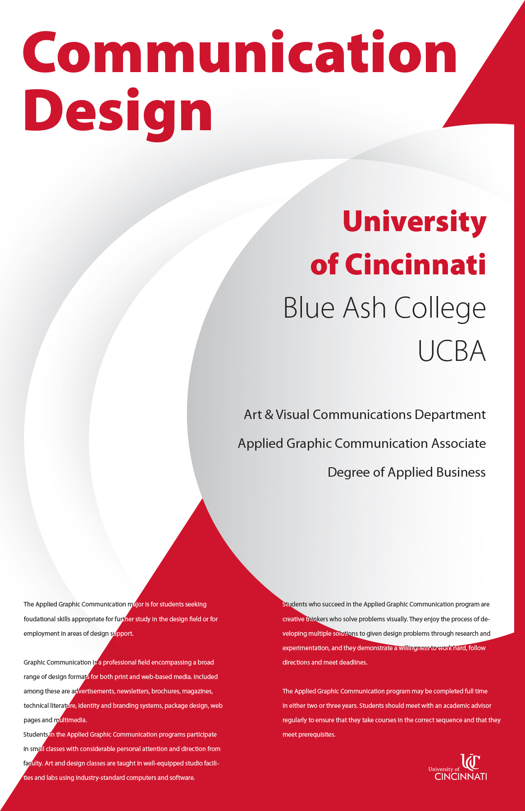
                            
                        </div>
                        <p class="processDescription" id="posterText5">These were the least
                            successful for two reasons: the official UC monograms become the visual focus - fighting
                            the
                            content and failing to show university affiliation, and the visual elements fail to
                            reflect the content and purpose of the poster.
                        </p>
                    
                        <p class="subTitle">Final Poster</p>
                    
                        
                        <p class="processDescription">Striving for an overarching metaphor,
                            I realized that my Bic ballpoint pen, laptop and mouse, scrap paper and lunatic scrawl
                            could be universally recognized as a setup for design.
                        </p>
                    
                    
                        <p class="nextProject" onclick="incrementProject()">Next Project: </p>
                    </div>
                </div>

                <div class="gallerySlider" id="gallerySlider6">
                    <div id="scrollContent">
                        <div class="column colTitle">
                            <p class="title">Digital 3D Explorations</p>
                            <hr class="line">
                            <p class="description">Executed in Autodesk Maya, each of these studies were
                                intended to explore a different aspect of the digital 3D
                                workspace. Be it to learn something completely new or to build off of other studies to
                                learn a more advanced technique.</p>
                        </div>
                        <div class="column colProcess">
                    
                            <p class="subTitle">Digital 3D Explorations</p>
                            <p class="processDescription">
                                With such an expansive program, anyone can spend years developing their skills. This is
                                a non-comprehensive compilation
                                of some of my explorations, covering but not limited to: advanced shaders, bump maps,
                                nonlinear deformers, paintFX
                                conversions, and real-world mockups.
                            </p>
                            <div id="process3DGrid">
                                <p class="processText3D" id="figure10Text">Bottle and UV Textured Packaging</p>
                                
                    
                                <p class="processText3D" id="figure11Text">Paint FX and Aperature</p>
                                
                                <p></p>
                                
                                <p></p>
                                
                    
                                <p class="processText3D" id="figure12Text">Bubble/Iridescent Shader and Wave Deformer</p>
                                <video class="figureProcess process3D" src="Graphics/digital_3D/bubble_1-1.mp4" type="video/mp4" controls></video>
                                <p></p>
                                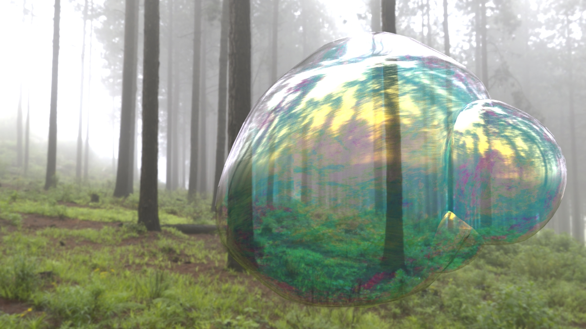
                                <p></p>
                                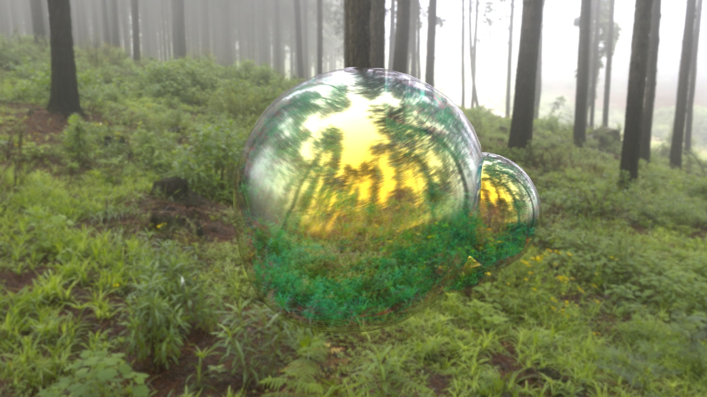
                    
                                <p class="processText3D" id="figure13Text">Glass and Wood Bump Map</p>
                                
                                <p></p>
                                
                    
                                <p class="processText3D" id="figure14Text">iPhone 8 Mockup for Patch</p>
                                
                                <p></p>
                                
                                <p></p>
                                
                                <p></p>
                                
                    
                                <p class="processText3D" id="figure15Text">Refractive Shader</p>
                                <video class="figureProcess process3D" src="Graphics/digital_3D/prism_1-1.mp4" type="video/mp4" controls></video>
                                <p></p>
                                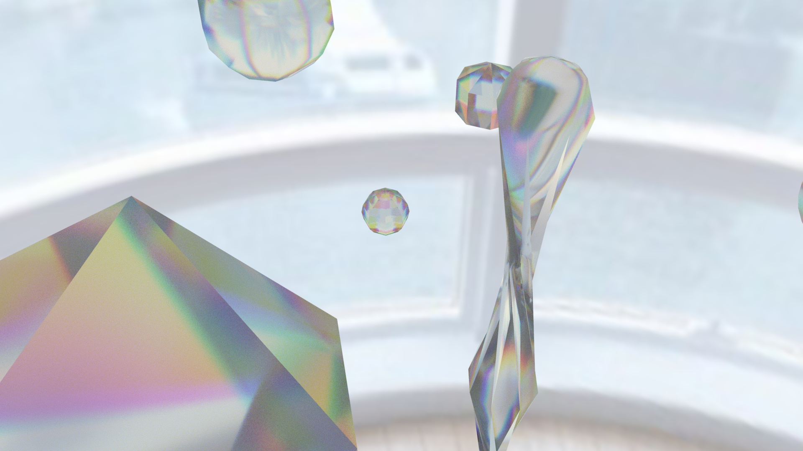
                                <p></p>
                                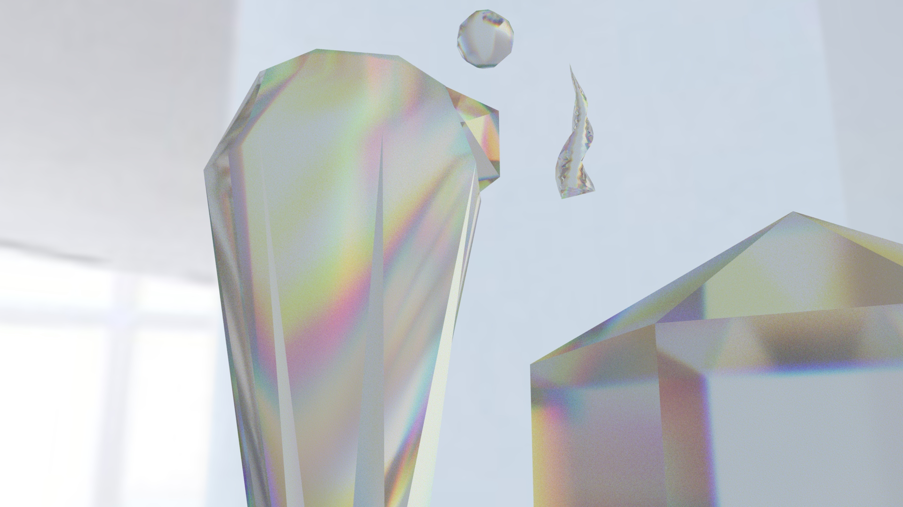
                                <p></p>
                                
                                <p></p>
                                
                    
                                <p class="processText3D" id="figure17Text">Paint FX and Snake Model</p>
                                
                                <p></p>
                                
                                <p></p>
                                
                            </div>
                        </div>
                    
                        <p class="nextProject" onclick="incrementProject()">Next Project: </p>
                    </div>
                </div>

                <div class="gallerySlider" id="gallerySlider7">
                    <div id="scrollContent">
                        <div class="column colTitle">
                            <p class="title">Body Mantle</p>
                            <hr class="line">
                            <p class="description">The Poplar Prince’s robes were created from 101 twelve-inch poplar
                                planks and held together with wood adhesive. The initial concept was modeled and
                                rendered in
                                Autodesk Maya, and the succeeding mantle was a loose adaption of what I could complete
                                over the
                                course of one all-nighter.</p>
                        </div>
                        <div class="column colProcess">

                            <p class="subTitle">Research</p>
                            <p class="processDescription">Because the poplar planks resembled reeds, I researched
                                styles of traditional reed
                                armor - especially that of ancient eastern shoguns.
                                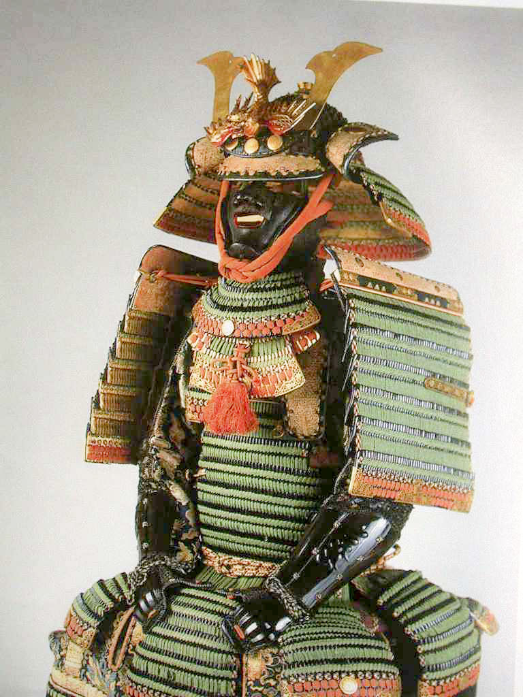
                            </p>

                            <p class="subTitle">Sketches</p>
                            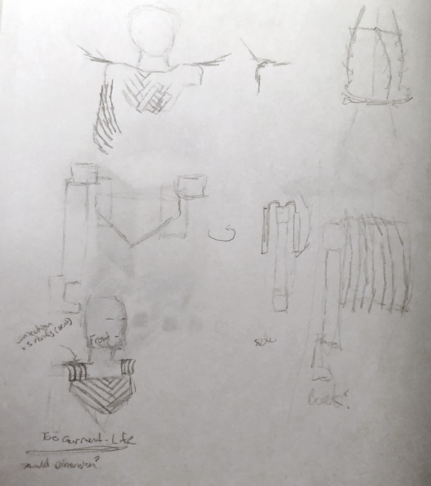
                            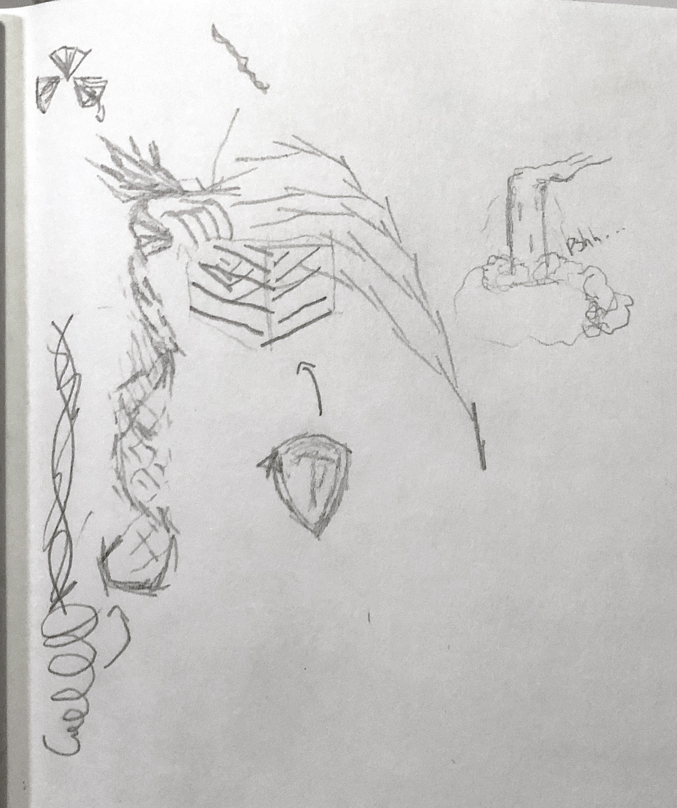
                            <p class="subTitle">Digital Ideation</p>
                            <p class="processDescription">I began by creating a duct tape
                                bust of my torso that I could use to brainstorm, though, I opted to brainstorm in the
                                digital
                                space instead.</p>
                            <div class="twoRow">
                                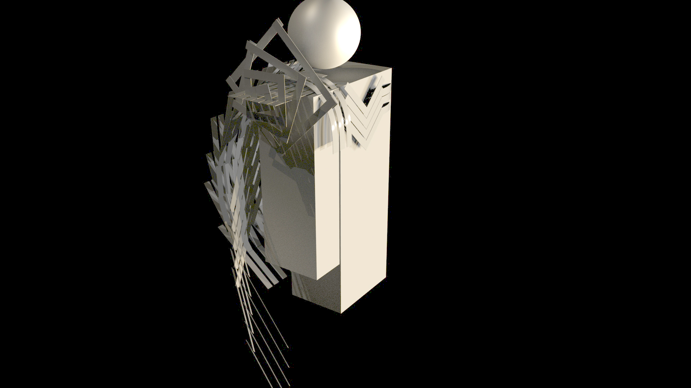
                                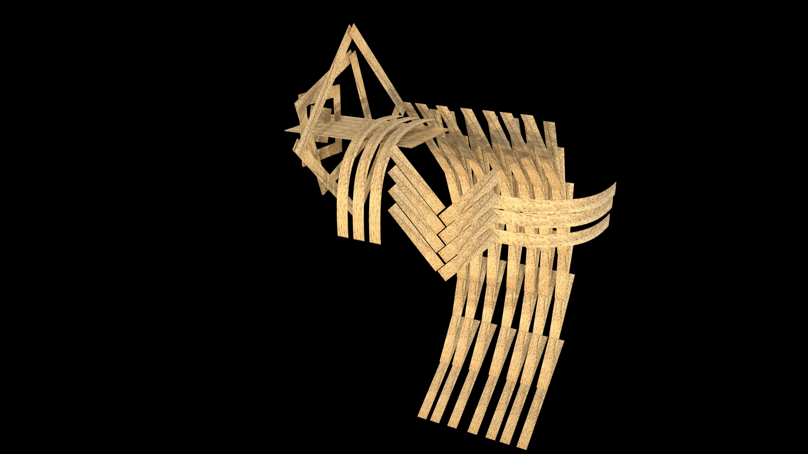
                            </div>
                            <p class="subTitle">Construction</p>
                            <p class="processDescription">When I began to construct the mantle, I found that the
                                skeleton made a
                                better
                                bust than my poplar-reinforced duct tape one. To create dimension of the overall form,
                                a
                                tiny (>.25in) spacer made of cut, layered, and glued poplar was placed between each
                                plank.
                                Without the spacers there would be no way to glue the sticks together. Each joint was
                                held
                                together for 30 minutes with a clothespin to avoid damage before the adhesive sealed.</p>
                            <div class="threeCol">
                                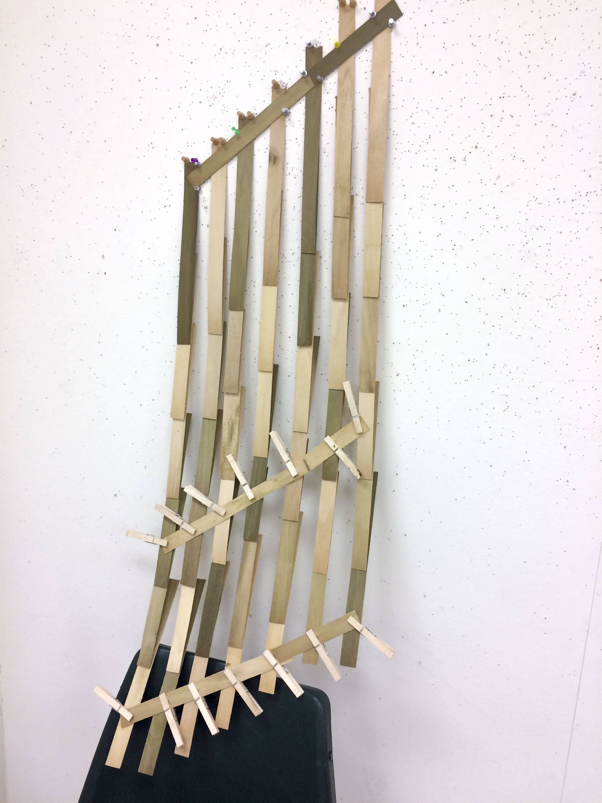
                                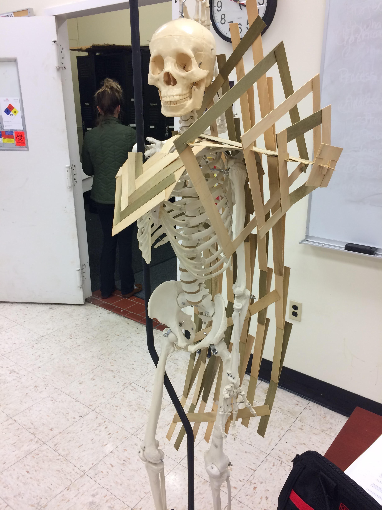
                                
                            </div>
                            <p class="subTitle">The Poplar Prince</p>
                            <div class="threeCol">
                                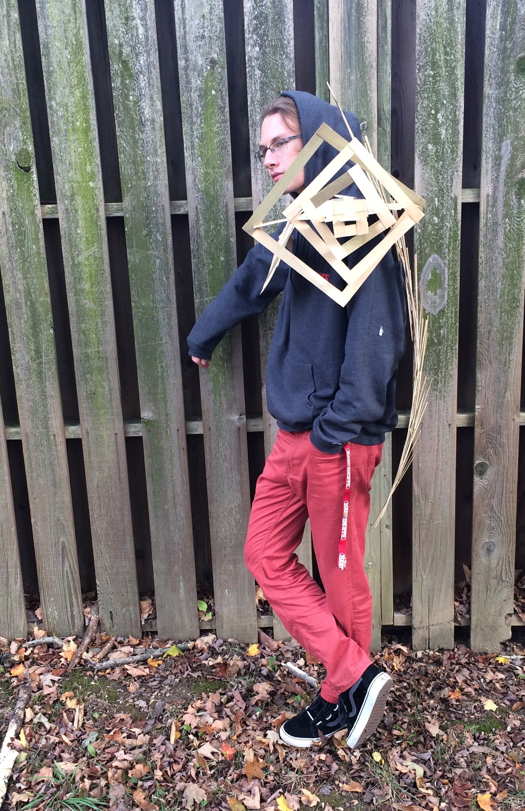
                                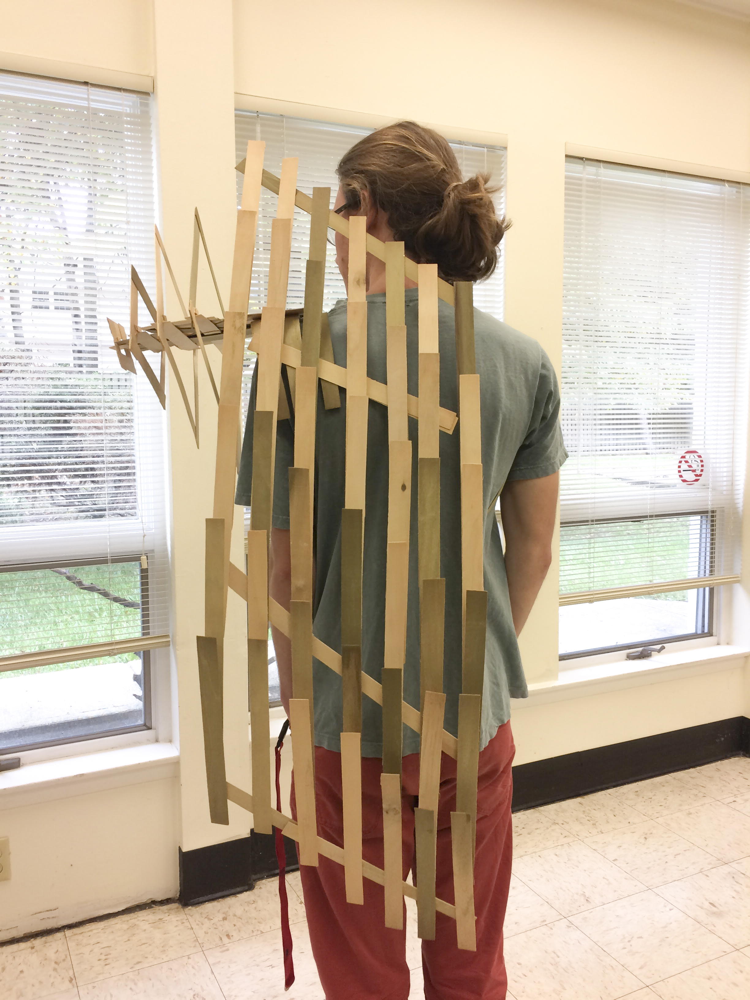
                                <p class="processDescription">The model was meant to liken cascading and asymmetrical
                                    movement a nontraditional ebb from bottom right to upper left culminating in a
                                    fractal
                                    spiral on the left shoulder.</p>
                            </div>
                            
                        </div>

                        <p class="nextProject" onclick="incrementProject()" style="opacity:0;">Next Project: </p>
                    </div>
                </div>
            </div>
        </div>

        <!--
                            classes needed for figure grids:
                                full/half/third width horizontal
                                    .fullWidthHorz
                                    .(half)WidthHorzGrid
                                full/half/third height verticle
                                    .(full)HeightVert
                                to specify grid spaces:
                                    .twoCol / .threeCol
                                    .twoRow / .threeRow
                            
                            classes for longest axis of figure:
                                    .wide
                                    .tall
                                    
                                
                                * accompany half-width figures with text
                                * half and third widths are grids
                                * there will be no verticle grids
                
                            Get rid of grid, incorporate 1 row grids
                            Longest line length = 66%
                            Shortest line length = 50%
                        -->
        <div id="underCircle" class="circleContainer">
            <div class="menuItem">
                <button type="button" class="circle" onclick="selectProject(1)">I.</button>
                <p class="navProjectTitle">LOADING</p>
            </div>
            <div class="menuItem">
                <button type="button" class="circle" onclick="selectProject(2)">II.</button>
                <p class="navProjectTitle">LOADING</p>
            </div>
            <div class="menuItem">
                <button type="button" class="circle" onclick="selectProject(3)">III.</button>
                <p class="navProjectTitle">LOADING</p>
            </div>
            <div class="menuItem">
                <button type="button" class="circle" onclick="selectProject(4)">IV.</button>
                <p class="navProjectTitle">LOADING</p>
            </div>
            <div class="menuItem">
                <button type="button" class="circle" onclick="selectProject(5)">V.</button>
                <p class="navProjectTitle">LOADING</p>
            </div>
            <div class="menuItem">
                <button type="button" class="circle" onclick="selectProject(6)">VI.</button>
                <p class="navProjectTitle">LOADING</p>
            </div>
            <div class="menuItem">
                <button type="button" class="circle" onclick="selectProject(7)">VII.</button>
                <p class="navProjectTitle">LOADING</p>
            </div>
        </div>

        <input type="image" src="Graphics/ICONS/button.svg" id="expandButton" onclick="expandProject()">

    </div>

</body>

</html>